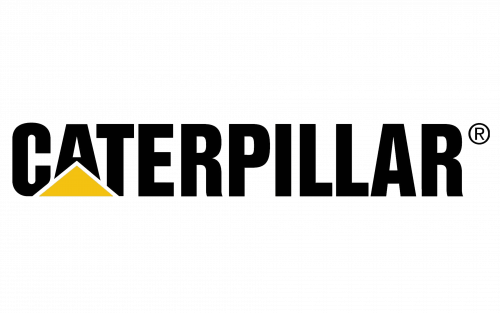
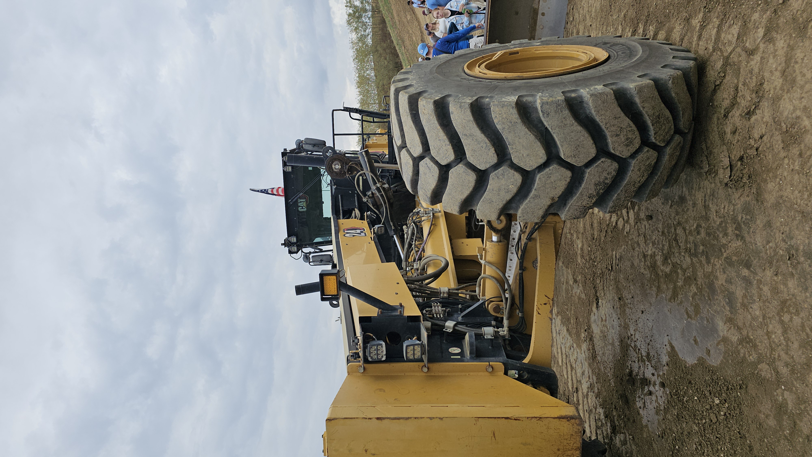
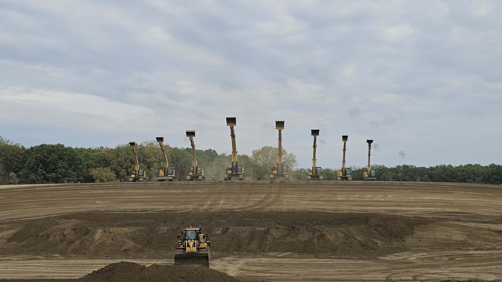
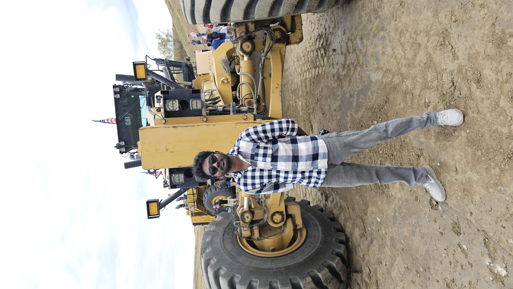
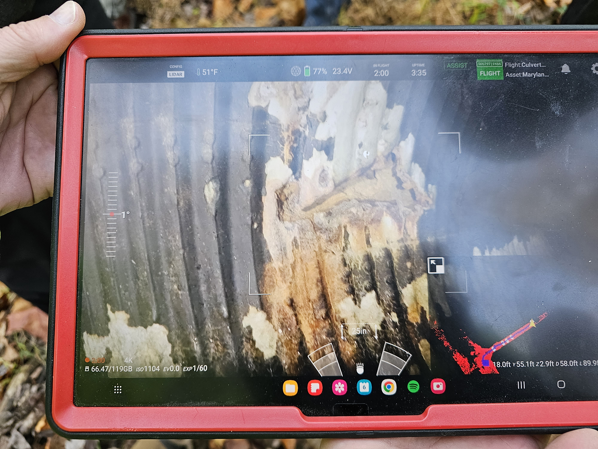

Caterpillar
Robotics Engineer



I develop and deploy production-grade positioning, estimation, and control systems for industrial machines operating in real-world environments. My work focuses on building kinematic propagation and sensor fusion frameworks that combine GNSS and IMU data to achieve millimeter-level end-effector accuracy. I design modular, platform-agnostic autonomy algorithms and validate them in high-fidelity simulation environments before deploying to production hardware.
 C++
C++ Python
Python Kinematics
Kinematics Control Systems
Control Systems Simulation
Simulation Protobuf
ProtobufMaryland Department of Transport
Robotics Software Engineer



Developed an end-to-end autonomous inspection system for storm-drain pipelines using aerial and ground robots. Led efforts across localization, perception, and mapping in GPS-denied environments, implementing VIO with EKF-based sensor fusion to achieve reliable navigation. Deployed a real-time defect detection pipeline using YOLOv5 on NVIDIA Jetson Xavier (45 FPS) and built a 3D reconstruction system using Gaussian Splatting for accurate scene modeling in feature-scarce underground conditions.
Python Gaussian Splatting
Gaussian Splatting State Estimation
State EstimationUMD Robotics Research Lab
Robotics Researcher

Developed a collaborative multi-robot system where aerial drones perform target search and communicate GPS coordinates to ground robots. Implemented EKF-based sensor fusion for localization using GPS, IMU, and odometry. Designed a Dynamic Window Approach (DWA) planner with LiDAR-based obstacle avoidance and real-time mapping in unknown environments.
Python Controls Locomotion Computer Vision
Computer Vision Path Planning
Path Planning